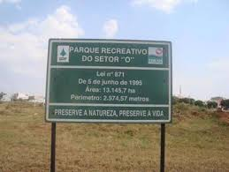

Parque Setor O
📍 Localização: Ceilândia - DF

Lazer e Natureza em Ceilândia
O Parque Ecológico do Setor O é uma importante área verde de conservação, esportes e lazer para a comunidade, contando com pistas de caminhada e vegetação típica do Cerrado.